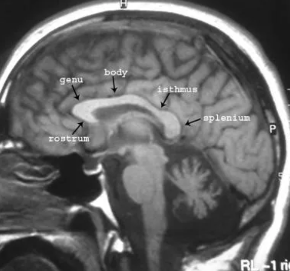
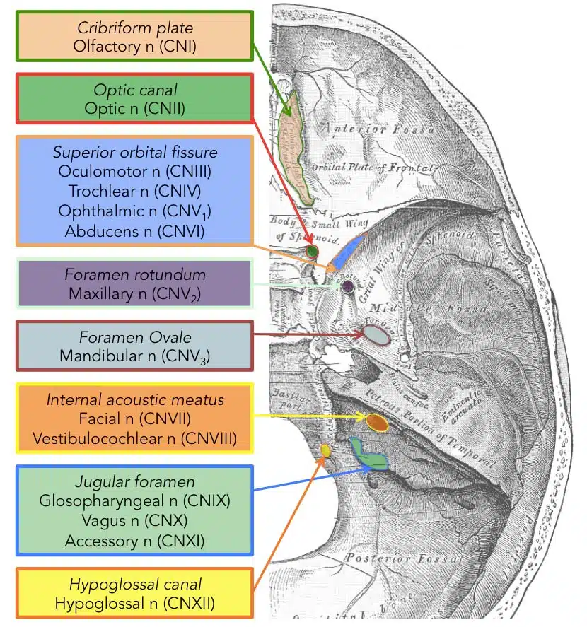
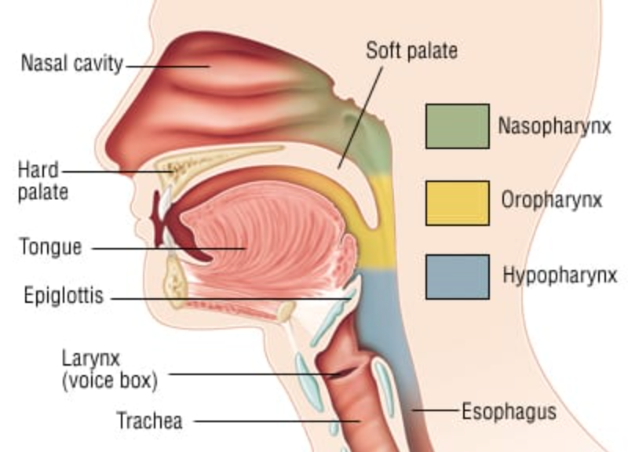
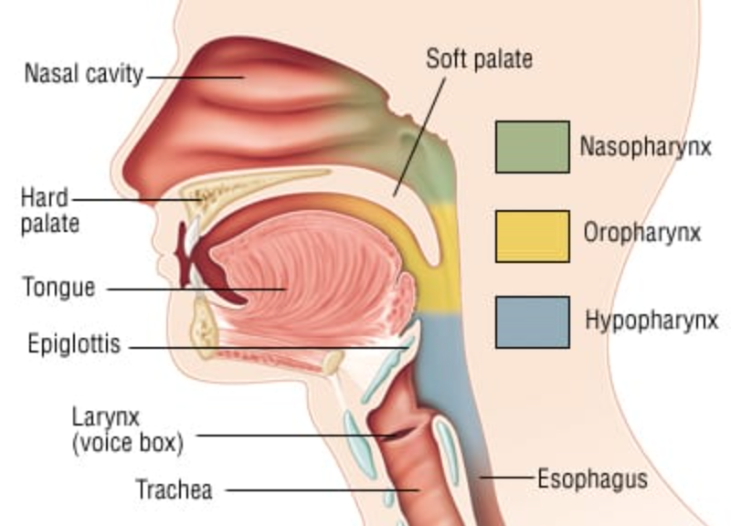
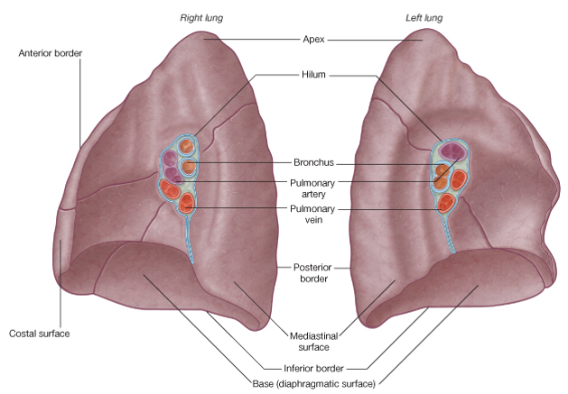
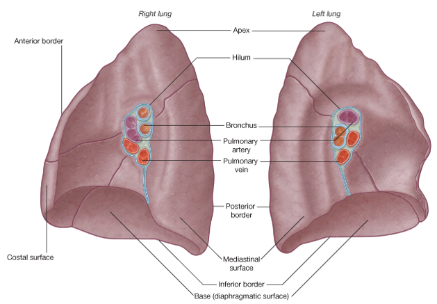
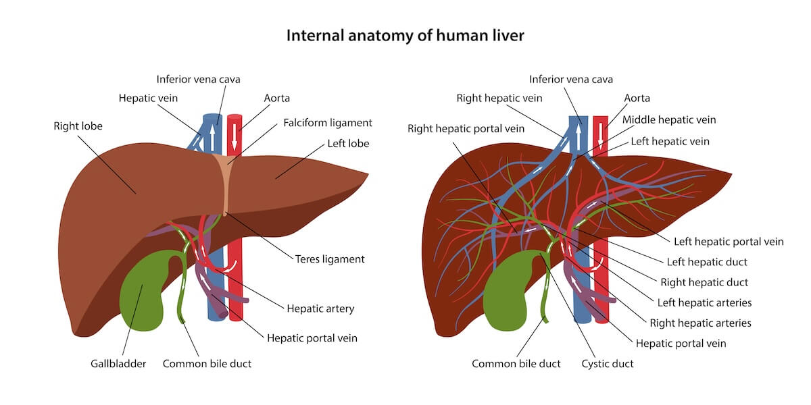
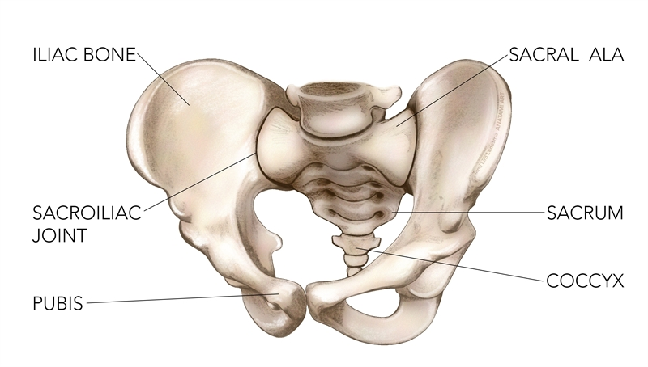

- Carcinoma
- Sarcoma
- Leukemia
- Lymphoma
- Multiple myeloma
- Melanoma
- Brain/Spinal cord tumour
| Epithelial Cell or Skin | |
| Basal cell | (innermost layer of epithelium) |
| Squamous cell | Organ or Cavity Linings |
| Renal cell | |
| Ductal carcinoma in situ | |
| Invasive ductal | Breast Milk Duct |
| Adenocarcinoma | Gland |
| Transitional Cell Carcinoma | Transitional Epithelium (=stretchable epithelium) |
| Soft tissue/Bone | |
| Bone marrow | |
| Lymphocyte | |
| Plasma cell | |
| Pigmented tissue | |
| Medulloblastoma | Cerebellum |
| Glioblastoma | Astrocytes (type of glial cell) |
| Primitive Neuroectoderm Tumour | Neuroectoderm (from ectoderm) |
Necrosis = tissue death
Ischemia = ↓ blood supply
# Sinus
https://radiopaedia.org/cases/ct-facial-bonesorbits-axial-labelling-questions
# Mandible

Brain
# https://radiopaedia.org/cases/brain-lobes-annotated-mri-1
- Brain Lobes
# https://radiopaedia.org/cases/brain-lobes-annotated-mri-1
- Meninges
< Dura mater Dural Infoldings
- falx erebri
- tentorium cerebelli
- Corpus Callosum
= white matter tracts that connects the left and right cerebral hemispheres
https://radiopaedia.org/articles/corpus-callosum

(https://emedicine.medscape.com/article/407730-overview) - Ventricle System
=chained cavities filled with CSF
cushion the brain
<2 x lateral ventricle
3rd ventricle
4th ventricle (CSF) → cisterna magna > dural sinus ( = vein of brain) - Arterial System
- Venous System
- Cranial Nerve
# http://www.bowenseminars.com.au/bowen-technique-influences-cranial-base-cranial-nerves-part-1/


(https://teachmeanatomy.info/head/cranial-nerves/summary/)
- Basal Ganglia
Neck
https://radiopaedia.org/cases/deep-spaces-of-the-head-and-neck-annotated-mri-1
Larynx = above cricoid cartilage

(https://www.2minutemedicine.com/wp-content/uploads/2014/11/Throat-Cancer-Larynx-and-Pharynx.jpg)
Larynx = above cricoid cartilage

(https://www.2minutemedicine.com/wp-content/uploads/2014/11/Throat-Cancer-Larynx-and-Pharynx.jpg)
# https://medicoapps.org/wp-content/uploads/2018/10/1521210682.jpg
Apex (apical)

Hilum (hilar)
= the attachment area between lung and lung root
(lung root lies between T5-T7)

https://www.goconqr.com/mindmap/6857328/lungs
(lung root lies between T5-T7)

https://www.goconqr.com/mindmap/6857328/lungs
(https://en.wikipedia.org/wiki/Liver_segment)

(https://ezra.com/blog/the-liver-its-anatomy-and-functions)
Spinal Cord (up to L1 or L2) →
Cauda Equina = spinal nerves and rootlets
L2-L5, S1-S5
→ Sacral Plexus L2-L5, S1-S5
# https://www.physio-pedia.com/Ilium

# https://www.sportsinjurybulletin.com/AcuCustom/Sitename/DAM/094/8843-pelvis-e1540157291687.jpg
CT of the male pelvis
# https://radiologykey.com/ct-of-the-male-pelvis/
Levator Ani
= muscle group at pelvis floor
Mesorectum
= peripheral fat surrounding rectum
Procedures
TME (Total Mesorectal Excision)
= bowel entirely removed with surrounding fat and lymph nodes
TaTME (Trans-anal TME)
= 'bottom-up' minimal invasive TME
= bowel entirely removed with surrounding fat and lymph nodes
TaTME (Trans-anal TME)
= 'bottom-up' minimal invasive TME